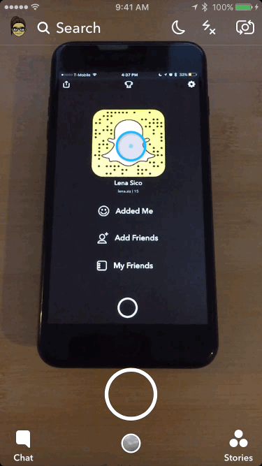
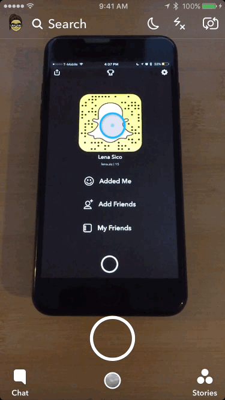
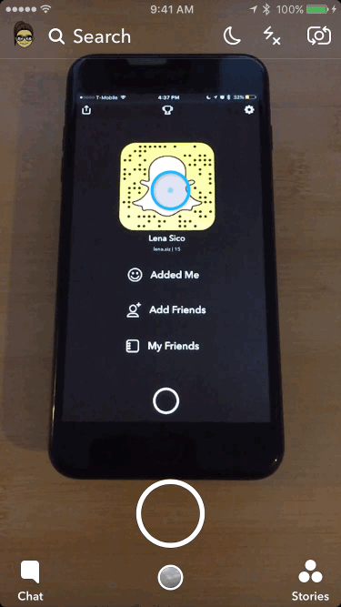

Directions:
Step 1: Open "Snapchat"
Step 2: Make sure that your rear-facing camera is on
Step 3: Point your Snapchat camera at a Snapcode, and then press and hold on the screen to scan it
A Video Tutorial for those that may be challenged
